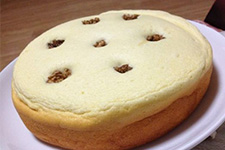
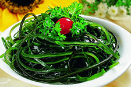
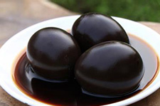
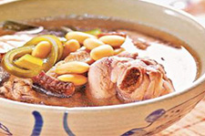
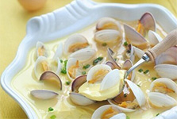
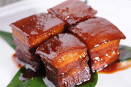

全部问题
我要提问
宝宝九个月了，我想给他做虾仁，谁有好的的办法
添加答案
93
赞
(116.4.151.113):
2个月前
回复（1）
一岁半的小孩，有点贫血，不怎么喜欢吃粥，有什么好的办法可以解决不？
63
赞
(126.4.171.15):
5个月前
回复（2）
把虾仁剁碎，然后包到饺子里，但一次不能吃太多。
32
赞
海绵宝宝
6个月前
回复（2）
1.虾洗干净 2.去虾线 3.用刀碾碎 4.放到蒸锅里 5.蘸酱油给宝宝吃
15
赞
爱生活
6个月前
回复（0）
虾仁或者包饺子吃
58
赞
小米*米
7个月前
回复（0）
我家宝宝爱吃虾直接蒸熟了吃

电饭煲蛋糕
烘焙培训

海带丝
蛋糕学习

醋泡鸡蛋

儿童增高食谱
美食问答
如何给七个月的宝宝做辅食
>
如何做粥给宝宝吃
>
宝宝吃什么有营养
>
小孩刚断奶吃什么好
>
相关食谱

宝宝美食
自制婴儿粥
婴儿辅食
小知识
宝宝吃鹌鹑蛋好还是鸡蛋好
>
1~3岁小孩营养
>
新食谱
秘制烤肉
酸辣粉

红烧肉